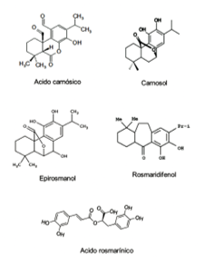

I. Contextualización
¿Utilidad de los principios activos de las Plantas Medicinales?
¿Utilidad de los principios activos de las Plantas Medicinales?
Las plantas han sido utilizadas durante miles de años en muchas partes del mundo por sus propiedades nutritivas y medicinales; y aunque su empleo con fines terapéuticos estuvo durante muchos años asociado a ritos mágicos y religiosos, habría que resaltar que esta utiliación se basa en el conocimiento de las plantas. El origen de la utilización de las esencias y aromas es tan antiguo como la agricultura. Comenzó por una colecta indiferente de plantas, pasando a una recolección selectiva, hasta llegar a una domesticación de las plantas más útiles hasta su extensión a cultivo.
En los últimos años se ha estudiado el efecto en la salud de los posibles compuestos bioactivos presentes en las plantas y es posible asegurar que existe más información a sus propiedades medicinales y/o toxicológicas.
Un ejemplo de ello es el romero (Rosmarinus officinalis L.) planta rica en principios activos, al tener un alto contenido aceites esenciales, cuyos ingredientes activos son flavonoides, ácidos fenólicos y principios amargos, generan una accción tónica y estimulante sobre el sistema nervioso, circulatorio y corazón, además de ser colerético, colagogo, antiespasmódico, diurético, emenagogo y antiespasmódico. (Musa and Chalchat 2008)
Generalidades
El romero (R. Officinalis L-) es una planta mediterránea cuyo término se deriva del griego “arbusto marino” por su crecimiento cercano a las costas. Generalmente se encuentra de forma silvestre en zonas rocosas y arenosas cerca del mar pero debido a su adaptabilidad y poca exigencia para cultivarse se reproduce con facilidad en otras zonas. El romero pertenece a la familia Lamiaceae (Labiatae Labiadas), as una planta arbustiva con tallos prismáticos, las hojas son estrechas, agudas y pequeñas, tiene forma de espigas de color verde brillante con márgenes revolutos y tallos leñosos y ramificados. (Sotelo 2002)

El tamaño varia de 0.5 a 1 metro de altura, florece dos veces al año en primavera y otoño, las flores se caracterízan por un color azul claro con pequeñas manchas violetas. En México crece y as utilzada como planta medicinal en los estados de Guerrero, Hidalgo, Jalisco, Michoacán, México, Morelos, Oaxaca, Puebla, Sonora, Tlaxcala y Veracruz. (Barni 2009)
Composición química
En la planta se han reportado diversos compuestos químicos los cuales han sido agrupados de manera general por diversos autores en ácidos fenólicos, flavonoides, aceite esencial, ácido triterpénicos y alcoholes triterpénios. El aceite esencial de romero es el componente más estudiado cualitativamente, algunas de las principales estructuras químicas activas se muestran en la figura 1. Diferentes trabajos de investigación afirman que dependiendo del lugar geográfico donde crezcan las plantas bajo condiciones de tipo de suelo, clima y altura sobre el nivel del mar generan diferentes cambios en cantidad y tipos de moléculas bioactivas presentes, por ejemplo las variedades de romero originarias de portugal se caracterizan por poseer altas cantidades de mirceno, mientras que en Francia es el alcanfor y en Marruecos el cineol.

De manera general, la composición química del aceite esencial de romero ha sido descrita en trabajos que indican el tipo de moléculas activas presentes. Se ha identificado la presencia de a-pinero, b-pinero, canfeno, ésteres terpénicos como 1,8-cineol, alcanfor, linalol, verbinol, terpineol, carnosol, rosmanol, isorosmanol, 3-octanona, isobanil-acetato y b-cariofileno; los ácidos vanílico, caféico, clorogénico, rosmarínico, carnósico, ursólico, oleanólico, butilíco, betulínico, betulina, a-amirina, b-amirina, borneol, y acetato de bornilo. (Ruiz 2000, Almeda 2006, Montes de Oca 2010, Tschinggeri 2010)
En el caso de las hojas del romero prevalece un alto contenido de ácido rosmarínico y su derivado rosmarinicina, también está presente el ácido el ácido carnósico que se caracteríza por ser inestable, su degradación se da por incremento de la temperatura y exposición a la luz; en presencia de oxígeno puede oxidarse para formar carnosol, rosmanol, epirosmanol y 7-metil-epirosmanol. (Arevalo 2006).
Obra publicada con Licencia Creative Commons Reconocimiento Compartir igual 4.0